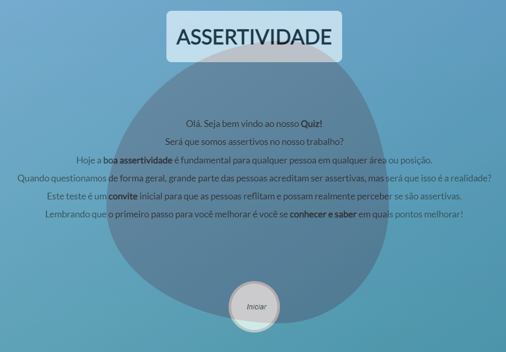

AI Ethics: Balancing Innovation and Responsibility
Published: March 7, 2025

Artificial intelligence offers incredible benefits, but it also raises important ethical questions.
From data privacy to algorithmic bias, developers and companies must consider how their AI solutions impact society. Transparent decision-making processes and clear accountability help build trust in these technologies.
Guidelines and frameworks for responsible AI development are emerging worldwide. By integrating ethical reviews into the design phase, teams can avoid unintended consequences and ensure fairness.
As AI applications continue to expand, striking the right balance between innovation and responsibility will remain an ongoing challenge.
Working in tech, I\'ve seen how open conversations about ethics lead to better products. Teams that welcome diverse viewpoints often identify biases earlier and create more inclusive solutions.
It\'s not just large corporations that need an ethics plan. Even small projects benefit from clear guidelines on data use and transparency.
